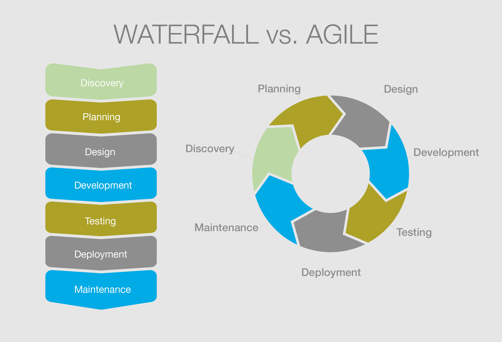

Välkommen till andra sidan gränsen, det svenska landet, ingen återvändo.
Systemutvecklings metodik
Systemutvecklings Metodik är ett samlings begrep över olika strategier processer som man använder i systemutveckling det inkluderar processer i planering, design, utveckling, testning och implementering av programvaran.

Skillnaden mellan de två olika Systemutvecklings metodikerna
När man pratar om Systemutvecklings Metodiker är det två viktigaste Strukturerade metoder och Agile metoder. Den stora skillnaden mellan dessa är att i strukturerade metoder måste man i förväg veta vart man ska och man jobbar med systemutvecklingen stegvis man blir först färdig med en sak före man går vidare med nästa. Vattenfallsmetoden är beroende av att teamet tillsammans prövar att gissa hur mycket tid och pengar det krävs för att utveckla en slutprodukt med ett fast antal krav. Medan om man jobbar med en agile systemutvecklings metod så prövar man inte att gissa exakt vilka delar slutprodukten kommer att ha istället jobbar man konsekvent med det som användaren och produkt ägaren bestämmer är viktigast, Vilka är det viktigaste "användare behoven" att utveckla först och så fortsätter man på det sättet med något nytt och går tillbaka till det man gjort tidigare för att förbättra det flera gånger, iterativt (ynch., 2016, s. 73)
Traditionella metoder kort sammanfattat
I vattenfallsmodellen så utför man stegvis utveckling där varje steg endast kan fortsätta att utvecklas efter att det tidigare steget har blivit helt fullfört, det vill säga att man inte börjar på designen före man har gjort färdig kravanalysen och inte börjar med programmeringen före man är färdig med all design (ynch., 2016, s. 74)
Läs mer om traditionella metoder här
Agila metoder kort sammanfattat
Den Iterativa metoden (Agile metoder) utvecklades för att lösa två huvudsakliga svårigheter med Strukturerade metoder, 1. Att tillåta nya och ändrade krav under utvecklingsfasen. 2. Men som fortfarande har en strikt hierarki för att fortsätta att hålla sig till planen och inte komma bort för långt från det huvudsakliga målet för systemutvecklingen från början (ynch., 2016, s. 77). Det liknar väldigt mycket på vattenfallsmetoden men den är något mer flexibel, i stället för att projektet går från start till slut så jobbar man genom så kallade sprints, små projektutvecklings faser som man delar upp projektet i där man bestämmer nya delmål genom till exempel scrum möten.
Läs mer om agila metoder här